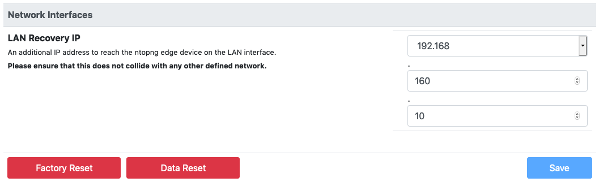

Data Management
During its normal execution, nEdge stores persistent data to disk. This data includes hosts and interfaces timeseries (for example, traffic and Layer-7 application protocols), detected alerts, hosts counters, etc. nEdge also keeps additional in-memory data to always have updated monitored data.
Sometimes it is necessary to reset all this data to start with a clean system, without any timeseries, known host, or any other kind of data generated during the execution.
nEdge provides an handy button Data Reset that accomplishes the aforementioned task. This button is available from the System Setup, tab Misc.

nEdge system setup page, tab Misc
A click on the Data Reset button will cause a confirmation dialog to appear. Confirming the operation will cause nEdge to restart itself and perform all the necessary data reset operations. The web GUI may become unavailable for a few seconds during these operations.
One could also have performed a factory reset but that would have reset also the configuration of the system. When the system setup is ok and only the data generated during the execution needs to be reset, using Data Reset is recommended.